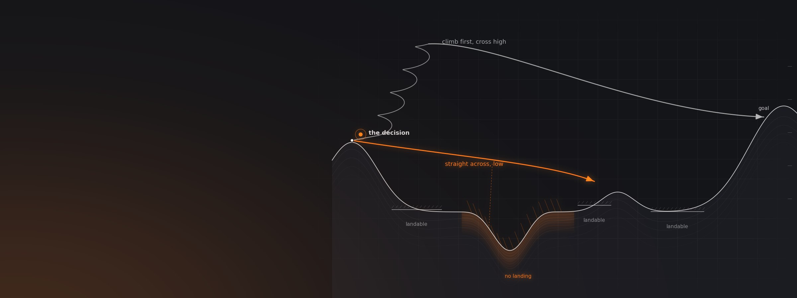
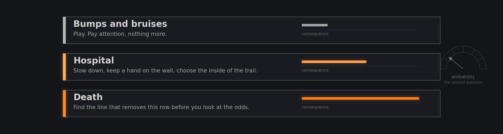
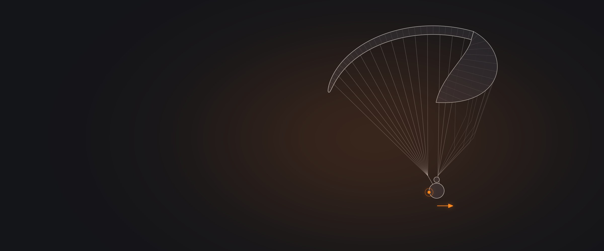
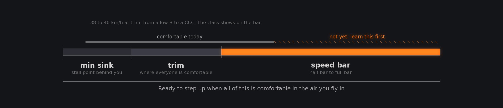
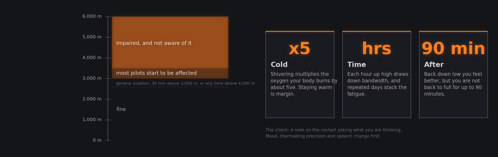

When to Push and When to Stop
How pilots who have lasted decide: what could actually kill you, what capacity means, what fear is for, and when a wing is earned rather than bought.
Twelve conversations. A Canadian adventurer, a Himalayan bivouac pilot, an acro founder, a hang-gliding world champion, an Ozone test pilot, two SIV coaches, a coach who lives in a van, a rigger who tests reserves for fun, and a doctor who studies what pilots do under G.
The twelve conversations
Open any tile for chapters, quotes and links Risk Vs Reward 1Philipp Zellner11 chapters
Episode 1856 min
Risk Vs Reward 1Philipp Zellner11 chapters
Episode 1856 min Risk Vs Reward 2Subir Sidhu11 chapters
Episode 1959 min
Risk Vs Reward 2Subir Sidhu11 chapters
Episode 1959 min Risk Vs Reward 3Manfred Ruhmer10 chapters
Episode 2457 min
Risk Vs Reward 3Manfred Ruhmer10 chapters
Episode 2457 min Risk Vs Reward 4Raúl Rodríguez7 chapters
Episode 26101 min
Risk Vs Reward 4Raúl Rodríguez7 chapters
Episode 26101 min Risk Vs Reward 5 : Gabriel Orsini (partytillimpact)13 chapters
Episode 4563 min
Risk Vs Reward 5 : Gabriel Orsini (partytillimpact)13 chapters
Episode 4563 min Consequence Over Probability: Will Gadd on Why True Safety Lies in Clarity13 chapters
Episode 33101 min
Consequence Over Probability: Will Gadd on Why True Safety Lies in Clarity13 chapters
Episode 33101 min Building a Healthy Relationship with the Skies: How to Master Fear, Build Resilience & Find Joy Through ParaglidingKinga Masztalerz12 chapters
Episode 75132 min
Building a Healthy Relationship with the Skies: How to Master Fear, Build Resilience & Find Joy Through ParaglidingKinga Masztalerz12 chapters
Episode 75132 min The Russell Ogden Interview: Decoding Paragliding Mastery Protocols: Progression, Fear & Competition12 chapters
Episode 76109 min
The Russell Ogden Interview: Decoding Paragliding Mastery Protocols: Progression, Fear & Competition12 chapters
Episode 76109 min Metacognition: Paragliding's Hidden Psychology with Beni Kalin & Heli Schrempf13 chapters
Episode 729 min
Metacognition: Paragliding's Hidden Psychology with Beni Kalin & Heli Schrempf13 chapters
Episode 729 min Cognitive Bias of Dunning Kruger Effect in Paragliding | Explained by Beni Kalin & Heli Schrempf3 chapters
Episode 7483 min
Cognitive Bias of Dunning Kruger Effect in Paragliding | Explained by Beni Kalin & Heli Schrempf3 chapters
Episode 7483 min Paragliding Physiology & Safety Protocols | Dr Matt Wilkes Explains: Biophysics in the Art of Flight12 chapters
Episode 739 min
Paragliding Physiology & Safety Protocols | Dr Matt Wilkes Explains: Biophysics in the Art of Flight12 chapters
Episode 739 min If you fly in the Himalayas, Alps, or above 3000 mtrs, this episode is for youDr Matt Wilkes6 chapters
If you fly in the Himalayas, Alps, or above 3000 mtrs, this episode is for youDr Matt Wilkes6 chapters
Judge what could kill you, not what is likely
Probability is the wrong first question. Ask what the worst outcome is, decide whether you can live with it, and only then ask how likely it is.
Will Gadd's rule is consequence over probability. The tempting glide into the lee that wins the task is also the one where a collapse puts you into rocks, and if you make that kind of call on probability, because you will probably get away with it, you do not last. He takes three more turns in the thermal, glides later, and accepts not winning, because a working glider and a working spine were worth more than that day. With his kids he runs the same thing as a three-step ladder: bumps and bruises, hospital, death. Name the level, then decide what to do about it.
Manfred Ruhmer, who competed at the top of hang gliding for three decades, splits risk into two kinds that get confused. One is losing the task: going low, landing out, a bad day. The other is flying where the landing options are gone, which puts you in hospital rather than at the bottom of the results. The first is the sport. The second is the one to design out of your flying, and it is also why Gadd rejects the phrase sucked into a cloud: nobody is sucked in, they fly in, and once you own that, you can fix it by leaving earlier and checking the radar on your phone.

After Will Gadd, Episode 45, chapter 11, and Manfred Ruhmer, Episode 19, chapter 6.
Build capacity before the day you need it
You can only recover from a configuration you have already seen. Capacity is what you have when the probability call goes wrong anyway.
Gadd's second tool is capacity: develop it so that when you still get it wrong, the outcome is a bruise rather than a funeral. He learned to roll a kayak with a friend holding the boat upside down and hitting him on the head, and for paragliding he went to a gymnastics gym, put on his harness, and jumped off a three-metre bar into mats until he knew how to turn a vertical fall into a slide. Subir Sidhu, who logged 1,500 hours in his first three and a half years without skipping a class, puts the same idea in flying terms: you can reliably recover a glider only from a shape you have put it in before, so an SIV belongs in the first 50 to 100 hours of anyone who thermals, because a thermal is turbulence you went looking for.
The coaches sharpen where the capacity should go. Beni Kälin argues that keeping the wing open matters more than any manoeuvre: a stall you rehearsed a hundred times over a lake does nothing for a big collapse ten metres off the deck, so active flying is the skill, and SIV is what you do for the rest. Russell Ogden adds a limit most pilots never measure: G tolerance varies from person to person and day to day, so learn yours early, and throw the reserve before your vision goes, because a couple of seconds after it goes, you are unconscious. When he tests spirals he only ever spirals to the right, so that if he loses vision he knows the exit is always left.

Having a working glider and a working spine was more important than winning that day. Step back a little and it is obvious. It is only when you think in probabilities that the bad call looks fine.
Will Gadd Episode 45, paraphrased
Drawn: an asymmetric collapse with the pilot releasing into the dropped side, and the reserve handle where the hand goes under G.
Fear is information, not an obstacle
The pilots who show up to overcome their fear do not last. The ones who listen to it, back up and do the work are the ones still flying.
Gadd is direct about it: if you feel fear on launch, it does not matter what a hundred and fifty other pilots are doing. Back up, slow it down, find out why, and progress when you want to. The people who arrive determined to overcome their fear either get hurt or wash out, because the fear was telling the truth. On the day he won the US Nationals he blew up his glider on full bar in rough air and was back on the bar in fifteen seconds, not because he ignored fear but because he had none: he had done the work and knew he could handle it. If you have prepared and you are still terrified, the preparation is not finished.
Raúl Rodríguez, who invented much of acro, still feels it on the way to the box before something new, and his answer is preparation: talk the manoeuvre through with every variation, imagine it many times, and then commit, because once the manoeuvre starts the fear leaves and only the glider remains. Kinga Masztalerz says flying strips every story you tell about yourself; after 200 winter hours in Bassano she took her confidence to the Swiss Alps in April, hit a tree inside two weeks, and spent two years mistrusting her own decisions. The SIV coaches' version is shorter: when your stomach says keep some distance from that wall, keep it. Every time one of them got into trouble, he had not listened.
Step up on evidence, not appetite
Every class flies about the same at trim. The difference is on the bar, so the test is whether you are comfortable across the whole speed range of the wing you already fly.
Subir Sidhu's rule for cross-country pilots: a low B and a CCC both trim at 38 to 40 km/h, so the performance you pay for lives on the speed bar. If you are not comfortable from minimum sink to full bar on your current wing, in the air you actually fly in, the next class gives you nothing you can use. He proved it on himself: 700 hours on a Xeno, then a CCC on which he was not confident on full bar in the same air, and his mentor's answer was neither more hours on the D nor calmer days on the Enzo, but acro, to learn wing control. Beni Kälin's threshold is blunter: fly 200 km in a day without a collapse, then think about moving up.
The counterintuitive part is that flying more can make you less safe. Kälin sees it most in speed flying, where the air is smooth, the ground is close, and daily flying breeds overconfidence; a few months off is useful because the sport feels fast again when you come back. Russell Ogden, who flies around 500 hours a year as a test pilot, says the biggest danger to him and his colleagues is themselves and the days they decide to fly. His numbers for the rest of us: 100 hours a year, three or four competitions, and about fifteen years before you reach your best. And when you are new, Manfred Ruhmer says, listen to the pilots who fly a lot and never get hurt, not the ones who talk a lot.

After Subir Sidhu, Episode 18, chapter 9, and Beni Kälin, Episode 72.
Your body sets limits before your skill does
Above about 3,000 metres you are impaired before you notice. Cold multiplies the problem, and the effects outlast the altitude.
Dr Matt Wilkes lists four environmental factors pilots underestimate: oxygen, cold, G force and sun. Oxygen is the sly one, because hypoxia narrows your thinking, your peripheral vision and your control of the glider, and you do not feel it happening. Most people start to be affected somewhere above 3,000 to 3,500 metres, and the general aviation rule of thumb is thirty minutes above 3,000 or any time above 4,000. He puts a note on his cockpit that asks what he is thinking, because mood, thermalling precision and speech change first, and a flying partner will often notice before you do.
Two multipliers make it worse. Shivering raises the oxygen your body burns by about five times, so staying warm is margin rather than comfort. And the effect has a hangover: descend and you feel better, but you are not back to full for up to ninety minutes. Sleeping high acclimatises; a competition that sleeps in the valley does not. His reserve research applies the same logic to the worst moment: under G, pilots reach along their skeleton, to the hip bone rotating forward and further down the thigh rotating back, and nobody could improvise a fix. The gear has to work where the hand actually goes, and there was no measurable difference in how fast pilots found a front-mounted handle versus a hip one.

After Dr Matt Wilkes, Episode 73 and Episode 74, chapter 7.
Worth remembering
Each one links to the chapter where it is saidThrow early, throw down
Will Gadd knows almost nobody who threw their reserve and did not walk away, and almost nobody who braced for impact and did. Under G, Gabriel Orsini throws straight down between the legs rather than sideways, because twisted and rotating you cannot tell which side is out. Matt Wilkes found the hand goes to the hip bone rotating forward and down the thigh rotating back. And test yours over water first.
Will Gadd What could actually kill you, and what to doDeciding
Consequence first, then odds
The row you are in, bumps, hospital or death, decides the plan. Probability is the second question.
Will Gadd Hazard, mitigation, and the unusual onesThere are two kinds of risk
Losing the task is one. Flying where the landing options are gone is the other. Design the second out.
Manfred Ruhmer Mentally and physically under high riskNobody gets sucked in
You flew into the cloud. Own it, then leave earlier and check the radar next time.
Will Gadd What could actually kill you, and what to doTraining
Recover only what you have seen
A shape your glider has never been in is one you will not fix. That is what SIV is for, early.
Subir Sidhu Discipline as a way of progressingKeep it open first
A rehearsed stall does nothing for a big collapse ten metres up. Active flying is the skill.
Beni Kälin Whether pilots need something like a BMIKnow your G tolerance
It varies by person and by day. Throw before your vision goes; a few seconds later you are out.
Russell Ogden Why there are no shortcuts in progressionYourself
Fear is a signal
If you feel it, back up and find out why. If you did the work and are still terrified, do more work.
Will Gadd Being too afraid to run the dropThe outcome is not the lesson
Got away with a bad launch? An incident still happened. Ask what, why, and whether you knew.
Subir Sidhu Discipline as a way of progressingMore flying is not more safety
Daily smooth-air flying breeds overconfidence. A break makes it feel fast again, which is the point.
Beni Kälin IntroductionQuestions these conversations answer
Each answer links to the chapter of the episode where the guest says it.
How do I decide whether a risk in paragliding is worth taking?
Will Gadd's method is consequence before probability. Ask what the worst outcome is: a bruise, a hospital, or death. Decide whether you accept that row, then work out how to mitigate it, and only then think about how likely it is. Making the call on probability alone, because you will probably get away with it, is how pilots stop lasting.
Will Gadd Hazard, mitigation, and the unusual onesWhat does capacity mean in paragliding, and how do I build it?
Capacity is what you have left when the probability call goes wrong: the collapse you have recovered fifty times, the crash you know how to slide out of. Gadd built it by practising crashing in a gymnastics gym. Subir Sidhu builds it in SIV and now acro, because you can only reliably recover a glider from a shape you have put it in before.
Will Gadd and Subir Sidhu Hazard, mitigation, and the unusual onesWhen should I do my first SIV course?
Subir Sidhu recommends within the first 50 to 100 hours for anyone who flies thermals, because a thermal is turbulence you went looking for, and turbulence will eventually put the glider somewhere new. For pilots who only soar smooth coastal air it matters less. Expect the first one to be somewhere between fun and terrifying, and expect to learn what you do under panic.
Subir Sidhu Discipline as a way of progressingWhen am I ready to move up a glider class?
Two tests from two pilots. Subir Sidhu: when you are comfortable across the entire speed range of your current wing, minimum sink to full bar, in the air you actually fly in, because every class trims at about the same speed and the difference lives on the bar. Beni Kälin: when you can fly 200 km in a day without a collapse.
Subir Sidhu and Beni Kälin Practice, and what it buys youIs it normal to feel afraid before flying?
Yes, and Will Gadd says you would be an idiot not to in some conditions. The point is what you do with it: listen, back up, find the reason, and progress when the fear is gone rather than trying to override it. If you have prepared properly and are still terrified on launch, the preparation is not finished and the answer is to stand down or fly last and easy.
Will Gadd Being too afraid to run the dropWhen should I throw my reserve?
Earlier than you think. Will Gadd knows almost nobody who threw and did not walk away, and almost nobody who rode the glider into the ground and did. Russell Ogden's line is your vision: if it starts to go, throw, because a couple of seconds later you are unconscious. Raúl Rodríguez, who has thrown many times, calls the reserve his best friend.
Will Gadd, Russell Ogden and Raúl Rodríguez What could actually kill you, and what to doWhich way should I throw the reserve in a spiral or autorotation?
Gabriel Orsini throws it down, between the legs, not sideways. Under real G you cannot tell which side is out of the turn, and a sideways throw gives the spinning wing time to catch the lines. Matt Wilkes's research adds that pilots find the handle along their skeleton, hip bone rotating forward and thigh rotating back, so the handle has to be there.
Gabriel Orsini and Dr Matt Wilkes Grabbing the bag, not the handleAt what altitude does hypoxia start to affect paraglider pilots?
For most people somewhere above 3,000 to 3,500 metres, though it varies with fitness, fatigue, dehydration and the altitude you sleep at. Dr Matt Wilkes uses the general aviation guide of thirty minutes above 3,000 or any time above 4,000, watches for mood and thermalling changes, and warns that shivering multiplies your oxygen demand by about five.
Dr Matt Wilkes Using a note on the cockpit to check yourselfWho should I take advice from as a new pilot?
Manfred Ruhmer: the pilots who fly a lot, fly cross-country regularly and never get hurt, not the ones who talk a lot. A pilot who breaks a bone every couple of seasons is not the one to ask. Gabriel Orsini adds that sponsored pilots are contractually biased about gear, and that the honest instructor's answer may sound worse than the salesman's.
Manfred Ruhmer and Gabriel Orsini Mentally and physically under high riskWhat is intermediate syndrome in paragliding?
The stage where a pilot's confidence outruns their judgement, usually after a fast early progression. Kinga Masztalerz describes hers: 200 hours of gentle winter flying in Bassano, then the Swiss Alps in April, a tree inside two weeks, and two years of mistrusting her own decisions. Beni Kälin and Heli Schrempf see it in pilots who skip steps and reflect only after the crash.
Kinga Masztalerz, Beni Kälin and Heli Schrempf Asking whether something actually helps your flying